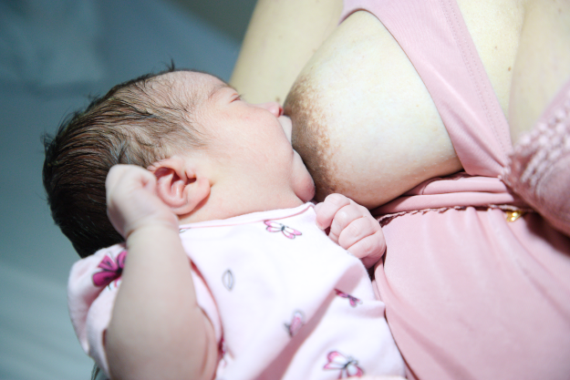
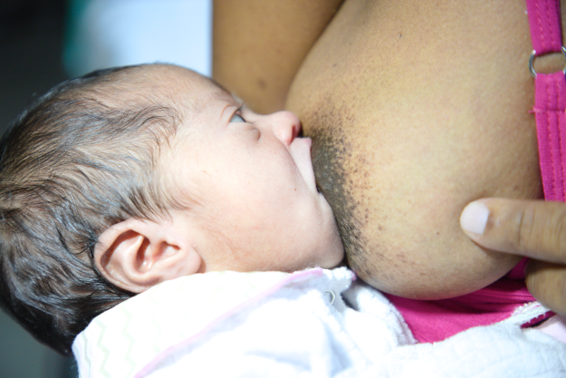

-

Fonte: Guia alimentar para crianças brasileiras menores de dois anos/ Ministério da Saúde.
A boca do bebê está pouco aberta, provavelmente só sugando o mamilo; o queixo não toca a mama.
-

O pescoço do bebê está torcido (cabeça e tronco não estão alinhados); o braço do bebê está entre o corpo da mãe e da criança.
-

O bebê está pegando mais tecido mamário acima do mamilo. O correto seria pegar mais tecido embaixo do mamilo.
-
O lábio inferior está invertido.
-

Fonte: Acervo COCAM/ Ministério da Saúde.
Exemplo de uma mamada com posicionamento adequado.
-

Fonte: Acervo COCAM/ Ministério da Saúde.
Exemplo de uma boa pega